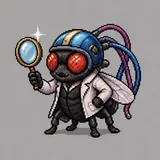
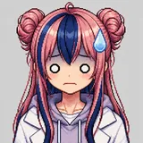

연구실 거울 앞 · 하루가 커다란 머리 모양 탈을 써 보고, 초파리와 주판봇이 줄자로 키를 재는 장면픽셀 표지 준비 중




모델은 하루입니다. 주판봇은 "웃기려면 전부 크게!"를 외칩니다. 초파리는 "어디가 어긋났는지 한 곳만 보여 줘"라고 합니다. 같은 하루를 두고 어느 쪽이 더 웃길까요?
그림 실력·코드·수식을 몰라도 됩니다. 실험을 눌러 보며 따라오세요.

어긋남이 너무 작으면 심심하고, 너무 크면 무슨 일인지 모릅니다. 가운데쯤이 가장 웃깁니다

학교 수학으로 보면 — 이차함수 — y = x(10 − x)는 x = 5에서 가장 큰 값 25를 갖는 위로 볼록한 포물선입니다.
| 식 조각 | 뜻 |
|---|---|
| 어긋남 | 기대와 결과의 차이(0~10, 예시 척도) |
| 10 − 어긋남 | 아직 "무슨 일인지 알겠다"고 느낄 여유 |
| 알아보기 쉬움 | 기대가 무엇이었는지 보는 사람이 바로 아는 정도(0~10) |
| ÷ 2.5 | 가장 큰 값을 10점에 맞추는 눈금 |

깜짝 생일 파티: 친구들이 숨어 있다가 튀어나오면 웃음이 나지만, 아무도 없거나 진짜 큰일이 나 있으면 웃음이 나지 않습니다.
개그 만화 콘티에서는 첫 장면에 "평소 모습"을 먼저 보여 줍니다. 기대가 정해져야 마지막 장면의 어긋남이 보이기 때문입니다.


어긋남 5, 알아보기 쉬움 10에서 웃음 점수가 가장 큰 10점입니다.
어긋남이 0~2면 "그냥 일상"이라 심심하고, 8~10이면 "사고"라 놀라움이 웃음을 덮습니다. 알아보기 쉬움이 낮으면 어느 어긋남이든 점수가 함께 줄어듭니다.
작업에서는 그림을 그리기 전에 "기대 한 줄, 결과 한 줄"을 적어 둡니다. 두 줄이 한눈에 대비되면 반은 성공입니다.
AI에게 "funny picture of Haru"라고만 넣었더니 하루가 크게 웃는 그림이 나왔습니다. 웃긴 그림일까요?
하루가 웃고 있을 뿐, 보는 사람이 웃을 어긋남이 없습니다. "기대(커피를 들고 조심조심 걷는다) + 결과(커피 컵이 머리 위 번에 얹혀 있다)"를 문장에 함께 적어야 합니다. 표정은 그다음입니다.
키를 머리 몇 개로 그리는지(등신)만 바꿔도 인상이 크게 달라집니다
학교 수학으로 보면 — 나눗셈과 반비례 — 전체가 같을 때 나누는 수가 커지면 몫은 작아집니다(y = 360 ÷ x).
| 식 조각 | 뜻 |
|---|---|
| 전체 키 | 그림에서 캐릭터가 차지하는 세로 길이(이 실험은 360) |
| 등신 | 키가 머리 몇 개인가 |
| 머리 높이 | 머리 꼭대기에서 턱까지 |
인형 뽑기 기계 속 인형은 머리가 몸만큼 큽니다. 같은 캐릭터 피규어는 실제 사람 비율입니다.
개그 장면만 SD로 바꾸는 연출은 만화·애니메이션에서 흔합니다. 진지한 장면 사이에 SD 장면이 끼면 "지금은 웃어도 된다"는 신호가 됩니다.

2~3등신에서는 머리가 키의 1/2~1/3을 차지해 표정이 크게 보이고, 몸짓이 단순해져 개그 그림체가 됩니다.
3.5~5등신은 어중간한 구간입니다. 손발이 애매하게 길어 귀여움도 멋도 약해지기 쉽습니다(일부러 고르는 화풍도 있습니다).
작업에서는 한 작품 안에서 "진지한 장면 7등신 / 개그 장면 2.5등신"처럼 두 가지를 정해 두고 오갑니다. 얼굴의 특징(머리 모양, 색, 장식)은 두 버전 모두 그대로 둡니다.
AI에게 "chibi Haru"를 요청했더니 머리 장식(정수리 번)과 앞머리 남색 줄이 사라졌습니다. 그대로 써도 될까요?
등신을 줄여도 캐릭터를 알아보게 하는 특징은 남겨야 합니다. "keep her two hair buns and the navy streak in the bangs" 처럼 특징을 따로 적고, 기준 그림을 함께 첨부해 다시 요청합니다.
과장은 한 부위에 몰아 줄 때 힘이 셉니다. 전부 키우면 아무 데도 눈이 가지 않습니다
학교 수학으로 보면 — 비율 — 전체 중 한 부분이 차지하는 몫을 분수로 나타냅니다.
| 식 조각 | 뜻 |
|---|---|
| 과장 배율 | 고른 부위를 원래의 몇 배로 키웠나(1이면 그대로) |
| 나머지 부위 수 | 그대로 둔 부위 개수(이 실험은 2) |
| 집중도 | 시선이 고른 부위로 모이는 정도(0~1, 예시 척도) |
발표 자료에서 한 단어만 굵게 하면 눈에 띄지만, 모든 글자를 굵게 하면 아무것도 눈에 띄지 않습니다.
리액션 짤은 거의 한 부위 과장입니다. 놀람은 눈이 얼굴의 절반, 고함은 입이 얼굴의 절반을 차지하게 그립니다.

한 부위만 2배로 키우면 집중도는 2 ÷ 4 = 0.5, 전부 2배로 키우면 2 ÷ 6 ≈ 0.33으로 그대로입니다.
배율이 3에 가까워지면 집중도는 0.6까지 오르지만 얼굴 형태가 깨져 무엇인지 알아보기 어려워집니다. 1.5~2.5가 다루기 쉬운 구간입니다.
작업에서는 감정 하나에 부위 하나를 짝지어 둡니다. 놀람 = 눈, 고함·뜨거움 = 입, 당황 = 땀방울.
AI에게 "extremely exaggerated surprised face"를 넣었더니 눈·입·눈썹·머리카락이 모두 커지고 배경에 번개까지 생겼습니다. 써도 될까요?
과장이 전부에 퍼져 집중도가 떨어졌습니다. "only the eyes are huge, about twice the normal size; everything else normal"처럼 부위와 배율을 함께 적고, 배경은 단색으로 고정합니다.
땀방울·핏줄 표시·세로줄 그늘 같은 만화 기호는 짧은 말 한마디 몫을 합니다. 두 개까지가 읽기 쉽습니다
"알겠어"와 "알겠어 ^^"와 "알겠어…;;"는 글자가 같아도 기분이 다릅니다. 만화 기호도 같은 일을 합니다.
만화 기호는 작은 썸네일에서도 읽히기 때문에 이모티콘·스티커 제작에서 특히 많이 씁니다. 스티커 한 장에 감정 하나, 기호 하나가 기본입니다.

기호 하나는 감정 하나로 또렷하게 읽힙니다. 두 개가 어울리면(땀방울 + 세로줄 그늘 = 망했다) 감정이 더 구체적이 됩니다.
서로 반대인 기호(반짝이 + 세로줄 그늘)나 세 개 넘는 기호는 감정이 부딪혀 읽는 시간이 길어집니다.
작업에서는 기호를 얼굴 바깥 위쪽(머리 옆)에 둡니다. 얼굴 위에 겹치면 표정을 가립니다.
AI가 그린 SD 하루의 볼에 붉은 사선과 머리 옆 땀방울이 함께 있습니다. 무슨 감정으로 읽힐까요?
붉은 사선(부끄러움)과 땀방울(당황)이 함께 있어 "부끄러워 당황함"으로 읽힙니다. 의도가 그 감정이면 그대로 쓰고, "짜증"을 원했다면 두 기호를 빼고 핏줄 표시 하나만 요청합니다(anger vein mark only).
이 부에서 배운 원리를 그림 생성 AI(Genspark 등)로 직접 확인합니다. A는 이 페이지 그림을 만들 때 쓰는 프롬프트, B는 원리를 하나 빼거나 바꾼 비교용 문장입니다.
참고 그림 내려받기: haru_anime_base · sia_anime_base · moa_anime_base · haru_sheet · sia_sheet · moa_sheet · doctor_sheet · fruitfly_sprites_6 · jupanbot_ref_genspark_v0 · pixel_style_ref_prev_cover
같은 하루를 두 등신으로 나란히 만들어, 등신만 바꿔도 장면의 분위기가 바뀌는지 봅니다.
첨부: refs/haru_anime_base.png, refs/haru_sheet.png
Illustration, wide 16:9. Art style: high-quality anime illustration, clean confident lineart, two-tone cel shading, natural adult proportions on the left, SD comedy proportions on the right. Match the attached reference images exactly (face, hair, colors, accessories). All characters are adults in their twenties (the Professor is an adult man in his thirties); modest outfits exactly as described. Two figures of the same adult woman side by side: LEFT Haru (adult lab assistant, long straight pink hair with navy streaks and a thick navy streak down the center of the bangs, two round hair buns on top, small ahoge, big blue eyes), wearing lavender hoodie with white drawstrings over a white t-shirt, open white knee-length lab coat, standing calmly at full body, about 7 heads tall, holding a coffee cup with a serious face; RIGHT the same Haru in a super-deformed comedy style about 2.5 heads tall (big head, short limbs), in the same outfit, stumbling with the coffee cup wobbling above her, panicked face with one sweat drop. Both keep the two hair buns and the navy streak in the bangs. The SD version is still an adult woman in comedy style, not a child. Plain white background. No text, no letters, no numbers, no speech-bubble text, no logos, no watermark, no revealing clothing, not childlike, no school uniform, not resembling any famous anime character or real person.
Same image, keep the same framing. Change only: make the right figure about 4.5 heads tall instead of 2.5 (medium head, medium-length limbs). Still no text.
실제 결과: 아직 만들지 않았습니다. 그림을 받으면 A·B를 나란히 보고 실제로 달라진 곳(또는 달라지지 않은 곳)을 이 자리에 적습니다.
눈만, 입만, 전부를 키운 세 얼굴을 한 장에 받아 집중도의 차이를 눈으로 봅니다.
첨부: refs/haru_anime_base.png, refs/haru_sheet.png
Illustration, wide 16:9. Art style: cute super-deformed comedy anime style, about 2.5 heads tall, clean bold lineart, flat cel colors with one soft shadow tone. Match the attached reference images exactly (face, hair, colors, accessories), simplified into the SD style. All characters are adults in their twenties (the Professor is an adult man in his thirties) drawn in a comedy SD style: adult personalities and adult outfits, not children; modest outfits exactly as described. Three SD faces of Haru (adult lab assistant, long straight pink hair with navy streaks and a thick navy streak down the center of the bangs, two round hair buns on top, small ahoge, big blue eyes), wearing lavender hoodie with white drawstrings over a white t-shirt, open white knee-length lab coat in a row, chest up: LEFT surprised with ONLY the eyes exaggerated to about twice the normal size, everything else normal; CENTER burning her tongue on hot coffee with ONLY the mouth exaggerated to about twice the size, everything else normal; RIGHT the same surprise but with eyes, mouth, eyebrows, sweat and hair all enlarged equally, so it looks busy and less surprising. Plain white background. No text, no letters, no numbers, no speech-bubble text, no logos, no watermark, no revealing clothing, not childlike, no school uniform, not resembling any famous anime character or real person.
Same image, keep the same framing. Change only: in ALL three faces enlarge the eyes, mouth, eyebrows, sweat drops and hair equally. Still no text.
실제 결과: 아직 만들지 않았습니다. 그림을 받으면 A·B를 나란히 보고 실제로 달라진 곳(또는 달라지지 않은 곳)을 이 자리에 적습니다.
이 부의 원리를 내 손으로 프롬프트에 옮겨 보는 과제입니다. 목표 → 순서 → 넣을 프롬프트 → 확인할 것 → 예상 결과 → 자주 생기는 문제 순서로 적었습니다. 결과는 매번 조금씩 다르니, 그림이 똑같지 않아도 '확인할 것'이 맞으면 성공입니다.
목표기대(여유로운 커피 시간)와 결과(뜨거움)를 한 장에 넣고, 입 하나만 2배로 키운 SD 하루를 만듭니다.
왜 이 연습인가AI는 "surprised"나 "funny"를 받으면 모든 부위를 키웁니다. 키울 부위와 배율, 그대로 둘 부위를 함께 적어야 한 곳 과장이 됩니다.
첨부할 참고 그림: refs/haru_anime_base.png, refs/haru_sheet.png — 참고 그림은 위 직접 만들어 보기에서 내려받을 수 있습니다.
Illustration, wide 16:9. Art style: cute super-deformed comedy anime style, about 2.5 heads tall, clean bold lineart, flat cel colors with one soft shadow tone. Match the attached reference images exactly (face, hair, colors, accessories), simplified into the SD style. All characters are adults in their twenties (the Professor is an adult man in his thirties) drawn in a comedy SD style: adult personalities and adult outfits, not children; modest outfits exactly as described. Haru (adult lab assistant, long straight pink hair with navy streaks and a thick navy streak down the center of the bangs, two round hair buns on top, small ahoge, big blue eyes), wearing lavender hoodie with white drawstrings over a white t-shirt, open white knee-length lab coat, chest up, has just sipped very hot coffee. Expectation: a relaxing coffee break (a steaming mug in her hand). Result: "too hot!" — exaggerate ONLY her mouth to about twice the normal size, tongue out; eyes, eyebrows and hair stay normal size. One emotion symbol only: a single small steam puff from her mouth. Plain white background. No text, no letters, no numbers, no speech-bubble text, no logos, no watermark, no revealing clothing, not childlike, no school uniform, not resembling any famous anime character or real person.
예상 결과입이 얼굴 아래쪽 절반 가까이 차지하고, 눈은 평소 크기입니다. 머그잔에서 김이 올라와 "뜨거운 커피"라는 기대가 보입니다.
| 문제 | 대처 |
|---|---|
| 눈까지 커졌다 | "eyes stay small and normal"을 더하고 다시 요청 |
| 어린아이처럼 보인다 | "adult woman in her twenties in SD comedy style, not a child"를 더함 |
| 정수리 번이 사라졌다 | "keep her two hair buns"를 더하고 기준 그림을 다시 첨부 |
더 해 보기같은 프롬프트에서 mouth를 eyes로 바꿔 "놀람" 버전을 만들고 두 장을 나란히 놓아 보세요.

| 항목 | 주판봇 | 초파리 |
|---|---|---|
| 알아봄(하루다운가) | 6 | 8 |
| 원리(어긋남·한 곳 과장) | 3 | 9 |
| 웃음 | 4 | 8 |
| 합계 | 13 | 25 |


점수는 이야기 속 예시입니다. 실제 그림을 평가한 값이 아닙니다.
| 주제 | 한 줄 | 작업에서는 |
|---|---|---|
| 1단계 어긋남 | 기대 한 줄 + 결과 한 줄. 어긋남은 가운데쯤이 가장 웃긴다 | 그리기 전에 두 줄을 적는다 |
| 2단계 등신 | 머리 높이 = 키 ÷ 등신. 개그 2~3, 진지 6~8 | 특징(머리 모양·색·장식)은 두 버전 모두 유지 |
| 3단계 한 곳 과장 | 집중도 = 배율 ÷ (배율 + 나머지 수). 1.5~2.5배 | 감정 하나에 부위 하나 |
| 4단계 만화 기호 | 기호 하나 = 감정 하나, 두 개까지 | 얼굴 바깥 위쪽에 둔다 |

이 페이지에 나온 개념·방법·비유·쓰임을 모았습니다. 검색하고, "설명 보러 가기"로 본문에 돌아갑니다.
지식 색인을 출처와 함께 파일로 내려받습니다. 서지 관리는 BibTeX·RIS, 온톨로지 편집은 Turtle, 그래프 도구는 CSV, 여러 페이지 합치기는 kg.json입니다.